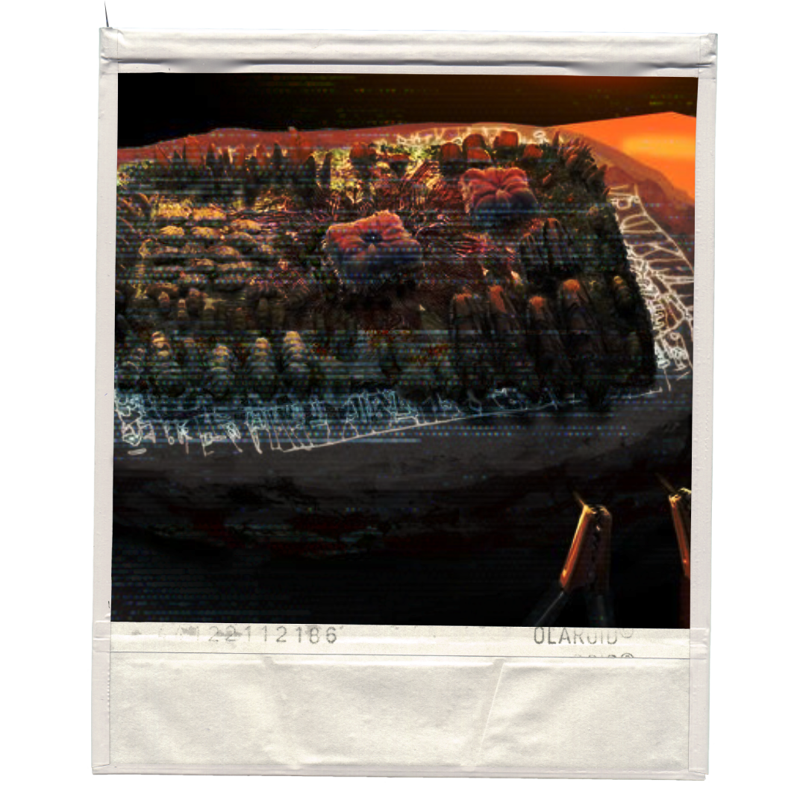

SCP-003 is to be maintained at a constant temperature of no less than 35°C and ideally kept above 100°C. No living multicellular organisms of Category IV or higher complexity may be allowed to come into contact with SCP-003.
In event of total power failure, if SCP-003-1 begins to increase its mass, assigned personnel must engage in skin contact with SCP-003-1. Ideally, personnel may use their body heat to return SCP-003-1 to above the critical temperature; however, skin contact must be maintained even in event of SCP-003 reaching activation temperature, lasting at minimum until SCP-003-1 advances fully to its second growth stage.
Personnel who enter SCP-003's containment area must first be examined for body parasites of Category IV or higher complexity, and sterilized if such organisms are present. All personnel who have come in physical contact with SCP-003-1 are to immediately report for sterilization afterwards.
SCP-003 consists of two related components of separate origin, referred to as SCP-003-1 and SCP-003-2.
SCP-003-1 appears to be composed of chitin, hair, and nails of unknown biology, arranged in a configuration similar to that of a computer motherboard. Testing reveals SCP-003-1 to predate earliest known circuit boards by a factor of thousands of years. SCP-003-1 is considered sentient but not actively dangerous except under certain conditions.
SCP-003-1 was found on a stone tablet, SCP-003-2, on which it currently resides. The runes on SCP-003-2 are not part of any known language, and emit pale, flickering light patterns.
SCP-003-2 is controlled by a (non-biological) internal computer, the contents of which are mostly inaccessible without risk of damaging SCP-003-2. SCP-003-2 is capable of controlled emissions of radiation, including heat, light, and anomalous radiation types. SCP-003-2 contains an internal power source of an anomalous nature, which appears to have been losing power since several centuries before discovery.
It is considered probable that SCP-003-2 was created for the purpose of containing SCP-003-1. Partially interpreted data recovered from SCP-003-2 may refer to a past and/or potential future LK-class restructuring event caused by SCP-003-1.
SCP-003 was located by remote viewing team SRV-04 Beta. It appears possible that SRV-04 Beta was deliberately contacted by SCP-003-2. Other organizations have also been alerted to SCP-003's existence, possibly by similar means. Despite this activity, SCP-003-2 does not appear to be sentient, based on its lack of reaction to M03-Gloria analysis and procedures.
Acting on information gathered from linguistic analysis of SCP-003-2's runes and comparative data analysis, Research Team M03-Gloria has managed to establish a link between SCP-003 and [DATA EXPUNGED] for analysis of functions. SCP-003-1 must now be considered sentient, and is to be kept a minimum of 1 km from [DATA EXPUNGED] and the resulting "by-product" at all times.
SCP-003-2's power loss has been exacerbated by the procedures performed by M03-Gloria. On orders of O5-10, M03-Gloria will continue procedures.
During M03-Gloria procedures, SCP-003-1 doubled its mass and began rapid structural growth. Temperature was immediately returned to 100°C. Growth and mass increase of SCP-003-1 continued for 9 minutes and 6 seconds, at which time a sustained radiation spike was produced by SCP-003-2. In response, SCP-003-1 returned to its normal state in 3 minutes and 39 seconds. New growth dissolved into a dusty residue which was collected for analysis. Both SCP-003-1 and SCP-003-2 ceased all detectable activity. SCP-003-2 did not resume activity until connected to external power source. SCP-003-2's runes glowed uniformly gray and did not resume normal activity for three (3) hours. SCP-003-2 no longer appears to be able to maintain containment area at a temperature above 35°C without external power supplied by Generators 003-III through IX.
The procedure detailed in Addendum 003-03 was repeated, and SCP-003-1 again entered a growth state. After 10 minutes and 13 seconds, SCP-003-2 once again produced a sustained radiation spike. SCP-003-1's growth stopped for 36 seconds, then resumed at its previous pace.
On quadrupling its mass, SCP-003-1 formed a coherent outer shell and body. After appearing to scan its environment and partially converting its environment, SCP-003-1 then breached containment, entering the observation gallery where nine members of M03-Gloria were present. On physical contact with team members, SCP-003-1 encompassed them in rapidly-grown appendages and stopped growth for 15 minutes. SCP-003-1 then resumed growth, and rearranged the component parts of the center of its form to the shape of a three-meter-tall female humanoid, with peripheral "tentacles" shifting to extrude primarily from SCP-003-1's newly formed "hair" and spine. SCP-003-1 then produced rudimentary vocalizations in an apparent initial attempt to communicate with researchers. [DATA EXPUNGED]
An unknown individual approached the compromised containment area in company of a full squad of agents. The individual claimed to be acting on orders of O5-10 and attempted communication with SCP-003-1. [DATA EXPUNGED]
Following this incident, Agent Jackson of M03-Gloria successfully restored power to SCP-003-2 and activated backup generators to return the temperature to 100°C. SCP-003-1 returned to its normal state in 21 minutes and 7 seconds, and was successfully re-contained without incident.
All nine members of M03-Gloria affected by SCP-003-1 were afterwards found to be physically unharmed, with no residual effects besides psychological trauma. The converted materials of SCP-003's former containment area did not dissolve and are now under analysis.
In light of the previous incident, O5-10 was removed from the O5 Council by joint decision of O5-██, O5-██, and O5-██. M03-Gloria procedures have been indefinitely suspended.
To date, SCP-003 has shown various anomalous properties, leading to significant research and containment measures. Its ability to manipulate matter and interact with biological organisms presents ongoing challenges for containment protocols.
Further research on SCP-003 is ongoing, and updates will be provided as new information becomes available.